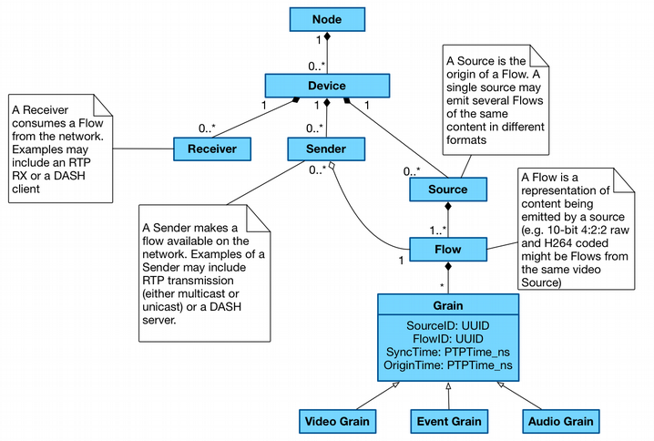
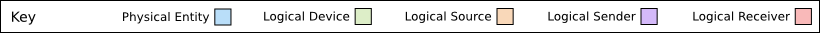
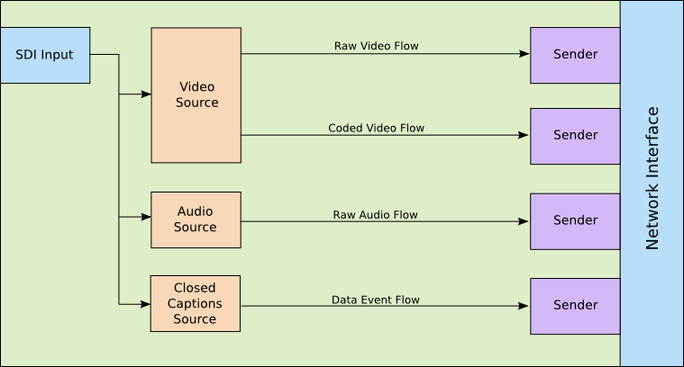
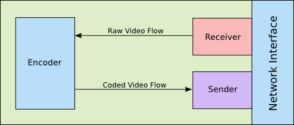
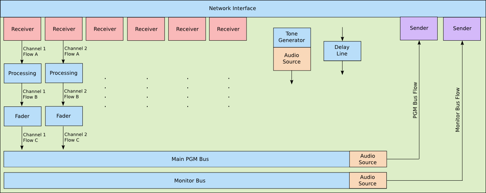
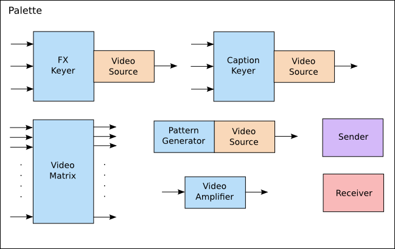
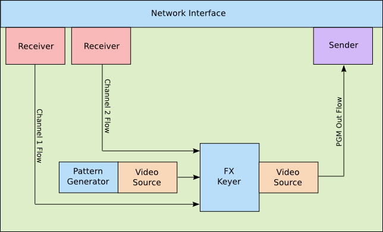

Data Model: Identifier Mapping
(c) AMWA 2016, CC Attribution-ShareAlike 4.0 International (CC BY-SA 4.0)
Identity is a core part of a flexible architecture for networked media. Associating IDs and timestamps with essence at the point of capture provides us with the capability to track a video frame or other content's ancestry through the production chain and back to the device which originally captured it. Definitions for each of the logical entities described here is available via the JT-NM Reference Architecture (http://www.jt-nm.org).
In order to ensure consistent behaviour in a production facility employing this identity, some rules must be applied when generating and handling identifiers. The guidelines below provide details of how this should be implemented.
Implementing identity in many Devices is relatively straightforward, however for more complex multi-stage Devices (for example vision and audio mixers) there is more to consider. It is important that all editorial and transformative changes made to essence are represented by the identity model. As such, new Sources and/or Flows must be generated for a number of internal operations carried out by Devices.
In addition to the potential creative benefits of tracking identity, some operational tasks can be simplified. For example, a camera's tally light can be instructed to watch for the ID of its video Source forming an ancestor of the vision mixer's PGM Out Source, and switching on whenever this is the case.
Identity Hierarchy

All resources shown above are part of the JT-NM reference architecture. Each logical entity (aside from the Grain and its descendants) is identified by a UUID and a version, with the version changing whenever a modification is made to the resource's metadata (such as a Flow label, Sender description etc).
Source and Flow Representation
Sources
A new Source should be created in the following circumstances:
- At the input of essence into a networked media enviroment from the 'edge' (ie. a legacy or incompatible protocol)
- At the point of capture (ie. in a network connected camera or microphone)
- At the mix point of two or more Flows of essence (ie. an audio mix bus, vision mix bus)
Whenever a new Source is generated, its immediate parent Source(s) must be recorded. This is achieved via a 'parents' attribute in the Node API Sources resource. This contains an array of Source IDs corresponding to the Sources whose Flows have been brought together at this point. For example, a vision mixer which is fading between a Flow from Source A, and a Flow from Source B would indicate ["A", "B"] in its 'parents' attribute for the duration of this transition.
Flows
A new Flow should be created in the following circumstances:
- Where a Flow passes through a processing element which is modelled as a new Source
- Where a Flow is modified in a non-editorial manner (ie. audio volume changed, EQ applied, video contrast changed, video encoded or decoded)
Note that in order to avoid creating a new Flow after every single processing element held within a Device, processing blocks can be logically grouped together provided it will never be possible to use a Flow from part way through the processing block. For example, a three band EQ block within an audio mixer will cause a new Flow to be generated. Creating a new Flow after each EQ band is an option, but as these Flows could never be used directly anywhere else internal or external to the Device the representation of it is of no benefit. It is however important to register the EQ process as a whole as a new Flow as it may be possible to route the pre-EQ and post-EQ essence to a Sender, or to a mixing element within the Device.
Sources and Flows must be advertised via a Node's API, and registered via the Registration API if available. This should only be done on the Device which originates the Source or Flow; if a Flow is received by a Device from the network it does not need to be re-advertised via APIs.
Whenever a new Flow is generated, its immediate parent Flow(s) must be recorded. This is achieved via a 'parents' attribute in the Node API Flows resource. This contains an array of Flow IDs corresponding to the Flows which have been brought together at this point. For example, an encoder which codes a raw video Flow C into a coded video Flow D would indicate ["C"] in its 'parents' attribute.
Important Note: A processing element which has a 1:1 input to output relationship and doesn't make editorial changes only need create a new Flow ID on output and not a new Source ID. As a Flow ID must descend from a single consistent Source ID, the Flow ID for these processing elements MUST be generated based on seed data including the incoming Flow ID. If this dynamic Flow generation cannot be achieved, the processing element MUST be viewed as a new Source instead (see Flow ID section below).
Identifier Persistence & Generation
Persistent identity helps to ensure that users' expectations meet with reality. For example, if a piece of equipment is switched off and back on, the user would expect it to return with the same signals routed to and from the same ports. A control system managing this can only do so if the identifiers used by the Node remain the same.
UUIDs are used throughout the NMOS data model, and can be generated in a number of ways (including from hardware addresses) in order to achieve consistent behaviour (see RFC 4122).
Node ID
For physical Nodes, the Node ID must be universally unique to that Node, and remain the same for all time (much in the same way as a serial number).
For virtual Nodes, the Node ID must be universally unique to that Node. If a snapshot is taken of the virtual Node then it should be stored with the same ID, however the following conditions must be applied when re-deploying the virtual Node from this snapshot:
- If deploying via the same controller which created it and no other instantiation of this virtual Node exists, the original Node ID should be used.
- If deploying via the same controller which created it and an instantiation of this virtual Node exists, it must be deployed with a new ID. Uses of this Node ID (and child resources) in any other stored data must be mapped to the new ID during this process.
- If deploying via a different controller it cannot be guaranteed that another instance of this virtual Node isn't already in existence. A new Node ID must therefore be generated, with any stored data being mapped to the new ID during the process.
In order to simplify the above process for deploying snapshots, you may opt to generate a new Node ID for each instantiation of a virtual Node snapshot, but a mapping service must provide translations between old and new IDs as this may be required to keep session / production / automation data relevant.
Device ID
Owned by:
- Node ID
Should change if:
- The same Device configuration operates on a different Node
- A duplicate of the Device operates at the same time as the original instantiation
Should not change if:
- The same Device configuration is re-loaded onto the same Node after a reboot or similar
It is suggested that Device IDs be generated using the combination of:
- The parent Node ID
- A Device serial number if available in the case of physical systems, or a persistent identifier or index created upon Device instantiation in the case of virtual systems
Source ID
Owned by:
- Device ID
Should change if:
- Device ID changes
- A different physical interface (such as an SDI input) is used to retrieve essence
- Format URN changes between video, audio and data variants
Should not change if:
- Configuration parameters associated with the Source are changed, such as its operating resolution or bitrate
- Labels, descriptions or other metadata associated with the Source resource are modified
It is suggested that Source IDs be generated using a combination of:
- The parent Device ID
- A processing element type and index (or name) within the Device
- A processing element Source index (or name)
Flow ID
Owned by:
- Source ID
Should change if:
- Source ID changes
- Format URN changes between video, audio and data variants (including between two codec types)
Should not change if:
- Configuration parameters associated with the Flow are changed, such as its operating resolution or bitrate
- Labels, descriptions or other metadata associated with the Flow resource are modified
It is suggested that Flow IDs be generated using the combination of:
- The parent Source ID
- A processing element type and index (or name) within the Device
- A processing element Flow index (or name)\
- Parent Flow ID**
** This should only be used in cases where the generation of a new Flow ID has been the result of a 1:1 transformation such as an encode, and not a vision mix.
Sender ID
Owned by:
- Device ID
Should change if:
- Device ID changes
- Transport type URN changes
Should not change if:
- Flow ID it is sending changes
- A virtual Device is re-configured, adding or removing some Senders, but keeping this one
It is suggested that Sender IDs be generated using the combination of:
- The parent Device ID
- An output connection identifier such as a bus name, index or similar
Receiver ID
Owned by:
- Device ID
Should change if:
- Device ID changes
- Transport type URN changes
- Supported data format URN changes between video, audio and data (including between two codec types)
Should not change if:
- Sender ID it is receiving from changes
- A virtual Device is re-configured, adding or removing some Receivers, but keeping this one
It is suggested that Receiver IDs be generated using the combination of:
- The parent Device ID
- An input connection identifier such as a channel name, index or similar
Virtual Identifiers
In systems which are heavily re-configurable such as an IT virtualisation platform, it may not always be possible to generate identifiers based on fixed hardware. This inability to re-generate the same IDs for the same processing elements indicates a need for some form of persistent storage in order to make the identifiers useful over a period of time longer than a single production deployment.
Consider for example a TV production using a re-configurable studio facility. The recording is split over a few weeks, with a gap of three days in the middle where the physical studio floor is in use by another production. It is necessary to 'spin down' the virtual infrastructure in use during this period so that it can be used by others. When spinning it back up again, all connections between senders and receivers should be re-instated, and all recorded metadata should be relatable to the previous recording period. By persisting the identifiers used in the previous production this is very straightforward (although the requirements for identifier re-generation as specified under the Node ID heading above should be observed, and mappings applied where necessary).
Real-World Identity Examples
In order to demonstrate how identity should be applied to real-world Devices, some example of common applications are included below.
Edge Device: Camera or SDI to IP Converter


System
- Fixed Node ID
- Fixed Device ID
Input
- SDI or Camera Sensor
Output
- Fixed Source IDs
- Fixed Flow IDs
- Fixed Sender IDs
Processing Device: Hardware IP Codec

System
- Fixed Node ID
- Fixed Device ID
Input
- Fixed Receiver ID
Output
- Flow ID generated based on input Flow ID (see Source and Flow Representation above)
- Fixed Sender ID
Processing Device: Hardware Audio Mixer

NB: A new Flow is created following each processing element where a tap off could be taken, even if it isn't being taken at that moment. For example, a pre-fade version of Channel 1 may be taken to the monitor bus post-processing (EQ), so a new Flow must be created here. The key is to distinguish this Flow as different from the post-fade version which may not have identical content. If a Flow receives a time domain modification (Grain sync timestamp change, or delay applied), no data model changes are required as the Grain origin timestamps still uniquely identify it within the originating Flow. At mix points and where data is generated from a control signal (such as a tone generator) a new Source must also be created.
System
- Fixed Node ID
- Fixed Device ID
Channel Strip
- Fixed Receiver ID
- Input dependent Flow ID following each self-contained processing element (see Source and Flow Representation above)
Tone Generator
- Fixed Source ID
- Fixed Flow ID
Delay Line
- Output Source and Flow ID match input
PGM Bus
- Fixed Source ID and Flow ID
- Fixed Sender ID
Monitor Bus
- Fixed Source ID
- Fixed Flow ID
- Fixed Sender ID
During operation, as with any other fixed hardware Device there is little need to generate new identifiers as they can be baked into the Device at manufacture. Changes will however be required to the ancestry recorded against Flows and Sources within the API (and network registry if applicable). These changes will occur whenever a modification is made to bus routing, such as pressing a PFL button or linking a channel to a particular group.
Metering isn't shown in this example, but may be shown to take an audio Flow as input, create a new metering data Source and Flow, and pass this data on to a Sender for transmission to the network as a series of measurements.
Processing Device: Virtual Vision Mixer on Fixed Hardware Node
This example covers a more flexible setup where the configuration of Devices is determined on a more freeform basis using logical processing blocks which can be assembled based on the user's requirements. Fundamentally this works in the same way as previous examples.

The user starts out with a palette of components which can be attached together to create a vision mixer suitable for their requirements. Each component can either have identity associated with it permanently (if there are a limited number of each component which can be deployed), or the identifiers could be generated on the fly as a particular component is instantiated. In the latter case, whilst randomly generated identifiers could be used each time, some degree of consistency may be useful. For example the main PGM output from the mixer might be best defined with the same Sender ID each time it is instantiated so that it can easily be brought up and routed from as part of a larger studio preset. Management and generation of these identifiers is at the discretion of the implementer, but a suggested scheme might use the Device ID plus processor type or role plus an index within the Device as the seed data to generate identifiers in a consistent manner.
Note as shown in the palette where new Flows are generated as opposed to new Sources. The video amplifier creates a new Flow based on its input as whilst it is editorially the same, an effect has been applied. The video matrix does not change any identity (no new Sources or Flows) as it acts purely as a passive splitter for existing Flows. The other components shown indicate that they are a new Source, either because they combine Flows or because they generate a Flow from scratch.
Having built a vision mixer from the palette above, a simple example layout is shown below.
Important Note: Unlike most of the processing elements above which have a fixed output Source and Flow ID, or carry the Flow ID through from the input, the video amplifier (much like an encoder or decoder) simply generates a new Flow from the input Flow without the need for a new Source. As a Flow ID must descend from a single consistent Source ID, the Flow ID for these processing elements MUST be generated based on seed data including the incoming Flow ID. If this dynamic Flow generation cannot be achieved, the processing element MUST be viewed as a new Source.

System
-
Fixed Node ID
-
Fixed Device ID
NB: This assumes the mixer cannot be logically split into two distinct mixers. In this case multiple Device IDs may exist
Inputs
- Fixed Receiver ID pool, or generated based on seed data of Device ID and Receiver index
Outputs
- Fixed Sender ID pool, or generated based on seed data of Device ID and Sender index
Pattern Generator
-
Source and Flow ID generated based on seed data of Device ID, processor type and pattern generator index within Device
Alternatively these IDs could be statically associated with a processor from the palette, rather than assigning them upon instantiation
FX Keyer
-
Source and Flow ID generated based on seed data of Device ID, processor type and FX keyer index within the Device
Alternatively these IDs could be statically associated with a processor from the palette, rather than assigning them upon instantiation